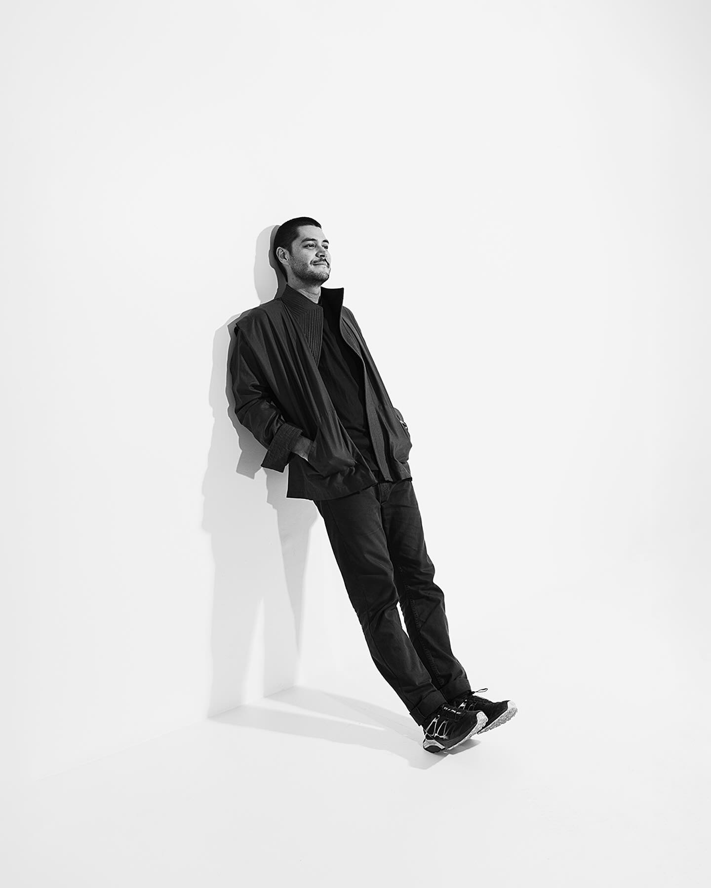

Juan Tribaldos is a photographer based in San José, Costa Rica. His practice combines long-term archival research with the documentation of artists' studios and creative spaces, examining them as sites of memory, labor, and cultural transmission.
Alongside his research-driven projects, he works as a photographer specializing in interiors and architecture, bringing a sustained attention to space, structure, and material conditions into both his artistic and commissioned work.
He studied Photography at Universidad Creativa (2013) and completed a Diploma in Documentary Filmmaking at the Instituto del Cine in Madrid (2014). His ongoing project, The Studio: A Living Archive, explores artistic ecosystems and cultural memory in Costa Rica.
Juan Tribaldos es un fotógrafo basado en San José, Costa Rica. Su práctica combina la investigación de archivo a largo plazo con la documentación de estudios de artistas y espacios creativos, examinándolos como sitios de memoria, trabajo y transmisión cultural.
Junto a sus proyectos de investigación, trabaja como fotógrafo especializado en interiores y arquitectura, aportando una atención sostenida al espacio, la estructura y las condiciones materiales tanto en su trabajo artístico como por encargo.
Estudió Fotografía en la Universidad Creativa (2013) y realizó un Diplomado en Cine Documental en el Instituto del Cine de Madrid (2014). Su proyecto en curso, El Estudio: Un Archivo Vivo, explora los ecosistemas artísticos y la memoria cultural en Costa Rica.
